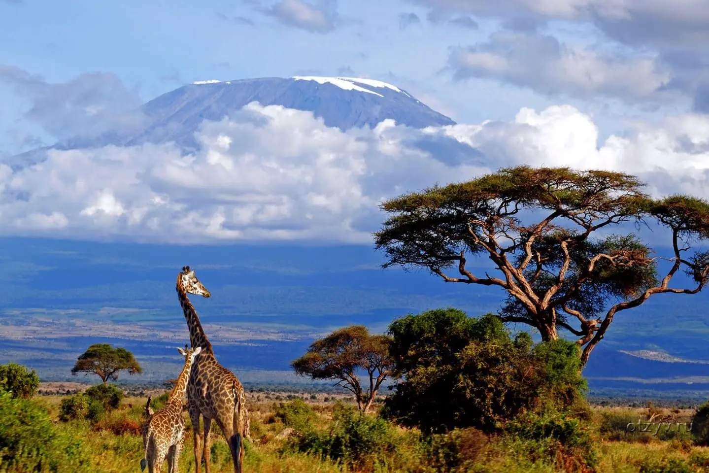

Горячие туры!

Поездка в Турцию
Отдых в Турции? Что там интересного а я отвечу ведь там:
1. Исторические достопримечательности: Турция богата историей и культурой, и здесь можно увидеть множество древних руин и памятников.
2. Красивые пляжи: Турция имеет более 8000 километров побережья на трех морях, что делает ее отличным местом для любителей пляжного отдыха.
3. Вкусная еда: Турецкая кухня знаменита своим разнообразием и вкусом. В Турции можно попробовать множество местных блюд и напитков.
4. Хорошие возможности для шопинга: Турция известна своими базарами и рынками, где можно купить местные изделия, сувениры и другие товары.
5. Разнообразные развлечения: Турция предлагает множество различных развлечений, включая спортивные мероприятия, круизы, сафари, балет и многое другое.
6. Гостеприимство: Турция славится своим гостеприимством и дружелюбием, что делает поездку более приятной и комфортной.
Поездка в Америку
Что вас ждем в Америке? Множество прекрасных вещей в которые входят:
1. Разнообразные достопримечательности: США предлагает множество различных достопримечательностей, включая национальные парки, музеи, знаменитые города и туристические аттракционы.
2. Культурное разнообразие: США является многонациональной страной с разнообразной культурой и традициями, что делает ее интересной для исследования.
3. Интересные города: США известна своими знаменитыми городами, такими как Нью-Йорк, Лос-Анджелес, Чикаго, Майами и другие, которые являются культурными и экономическими центрами страны.
4. Развлечения для всех: США предлагает множество различных развлечений, включая тематические парки, круизы, пляжный отдых, спортивные мероприятия и многое другое.
5. Великолепная природа: США имеет разнообразную и красивую природу, включая горы, пустыни, озера, реки и океаны.
6. Инновации и технологии: США является лидером в области инноваций и технологий, что делает ее интересной для исследования и изучения.

Поездка в Африку
Многие боятся Африку и не хотят отдыхать в этой экзотике но мы предлагаем посмотреть на эти стороны Африки:
1. Уникальная природа и дикие животные: Африка известна своей дикой природой и разнообразием животных, которые нельзя увидеть нигде больше.
2. Безграничный культурный опыт: Африка предлагает уникальный культурный опыт, включая местные традиции, ремесла и музыку.
3. Разнообразие пейзажей: Африка предлагает разнообразные пейзажи, включая пустыни, джунгли, горы и побережье.
4. Местные рынки и магазины: Африка предлагает множество местных рынков и магазинов, где можно купить местные изделия, сувениры и другие товары.
5. Активный отдых: Африка предлагает множество возможностей для активного отдыха, включая сафари, пешие прогулки, плавание с дельфинами и многое другое.
6. Гостеприимство: Многие страны Африки славятся своим гостеприимством и дружелюбием, что делает поездку более приятной и комфортной.